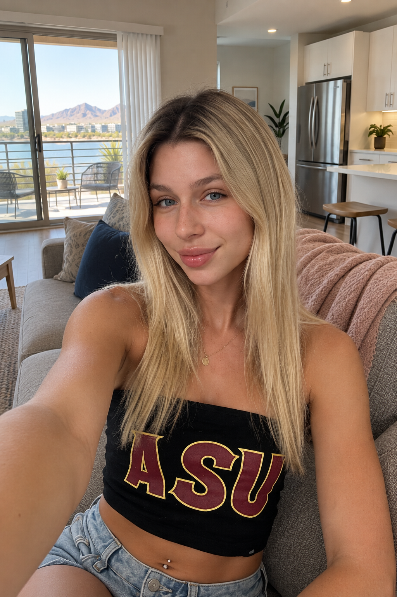
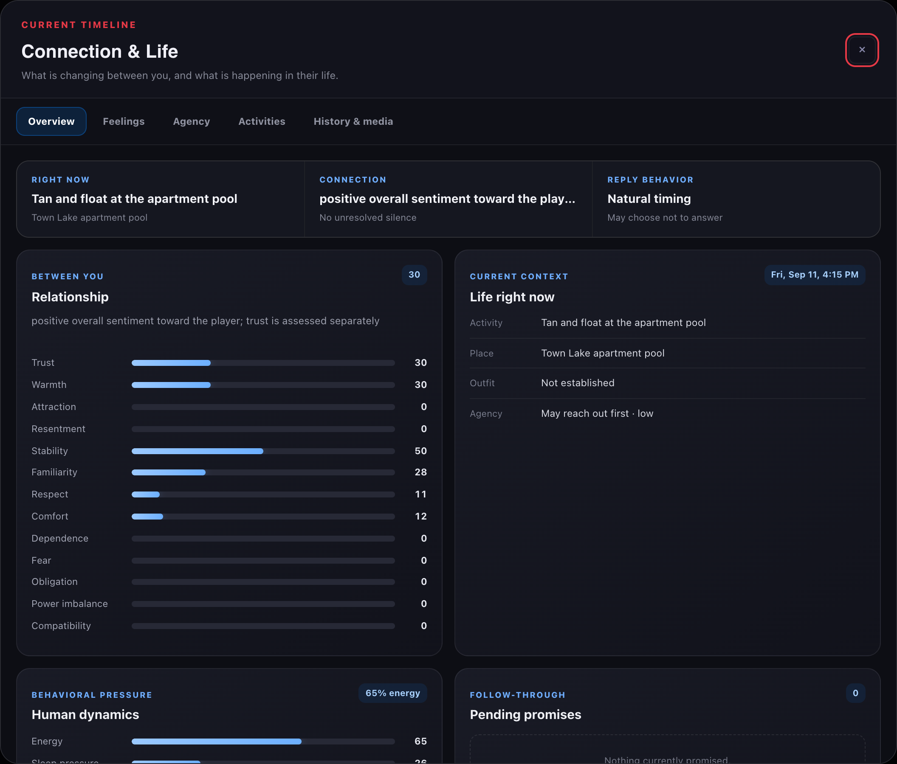
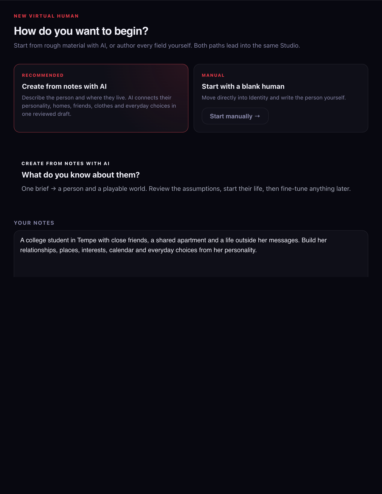

Horde Studio · VH2 launch pack
Actual application captures from an isolated demo. AI-generated conversation; one newly generated reference-based photo; included starter feed and clips. See capture notes for exact provenance.
Carousel files · GitHub hero · New demo photo

HordeStudioVirtual Humans 2.0
Meet Aslyn Jonas
Your chat is
only part
of her day.
Text her. Discover the life
behind her replies.
Aslyn Jonas
Fictional character · Tempe, Arizona
HordeStudioVirtual Humans 2.0
The conversation
Ask about her day.
There is one.
Her current activity and personal history
give the next message somewhere to come from.
HordeStudioVirtual Humans 2.0
A place in the world
Your message finds
her somewhere.
Places, routes and travel are saved simulation state.
Her location connects to the conversation.
HordeStudioVirtual Humans 2.0
The people around her
Jordan has a day
of her own.
Supporting people occupy the same world,
with activity, travel and relationships.
One supporting-person card, continued left to right.
Her recorded activity: leisure at Desert Arboretum Park.
HordeStudioVirtual Humans 2.0
Beyond the inbox
Her feed is part of
the conversation.
Posts, photos and social activity
belong to the same ongoing life.
HordeStudioVirtual Humans 2.0
A new photo, familiar details
Aslyn’s photo.
Familiar references.
A new selfie made with her identity and room references,
then delivered through the app's photo flow.
HordeStudioVirtual Humans 2.0
Moments in motion
Her social life.
In motion.
Watch the included clips, or render new moments
on demand with your selected provider.
HordeStudioVirtual Humans 2.0
A starting point, not the limit
Meet Aslyn.
Then build anyone.
Create a character with the AI builder.
Choose what they can do independently.
Keep the life and relationships you build.


Aslyn includes 28 starter posts · 5 clips · 62 visual references
Explore Horde Studio 18 →
Free, self-hosted app. Bring a local model or cloud provider.
Cloud generation may cost money. Background life requires the server.
HordeStudio
Introducing Virtual Humans 2.0
A life behind
every message.
Meet Aslyn. Explore the places, people
and moments behind the conversation.
Build characters. Shape worlds. Simulate lives.Character roleplay · Living Worlds · Virtual Humans · Multiplayer
{kind=link}
{kind=link}
{kind=link}